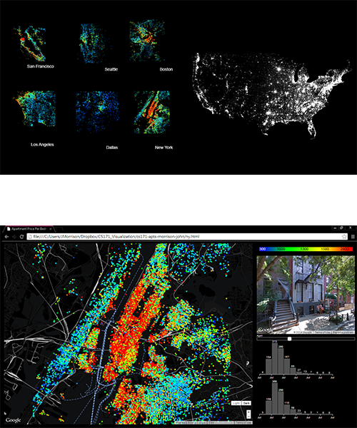
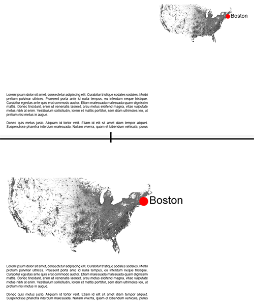 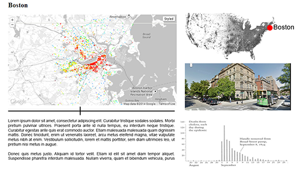
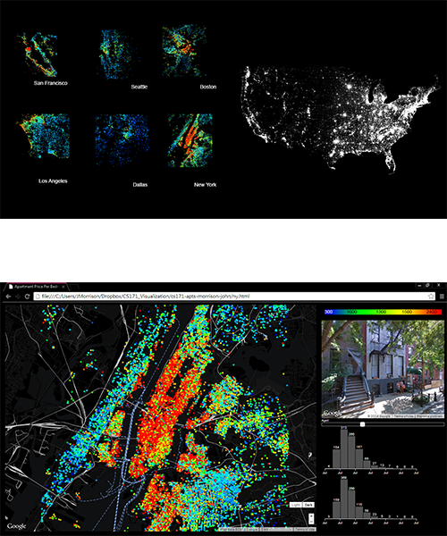
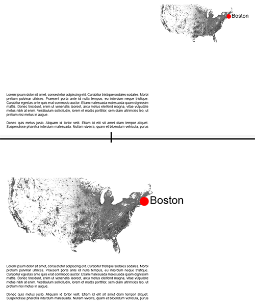 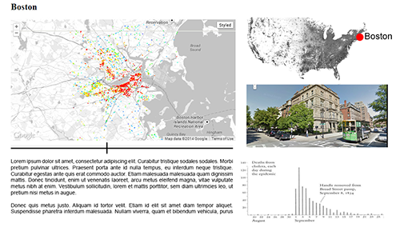
I've added an introduction page to the website. I plan to start with a clean page and add information on demand. So I've extracted all of the color from the first page. A click will take the user to the interactive portion of the visualization.
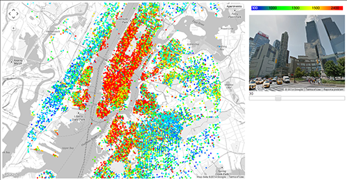I've added a streetview. My data comes from apartment listings; these listings have expired. I don't have access to the craigslist links, but as a substitute, I've added a streetview from Google maps. Hopefully this will aid in conveying the character of the neighborhood.
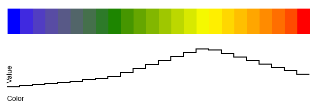The colors are an issue.
In the beginning, I just used a formula to derive the hue, but after learning about LAB color space I can see that yellow has more lightness than red.
My data is continuous, so this is unacceptable. I need a reliable lightness across the scale.
Chroma.js has been a life saver. I've been using this website by Gregor Aisch to evaluate several custom color scales.
I like it better than colorbrewer.
A first look at the data; every city feels like a surprise. Some patterns emerge, like Beverly Hills being the most expensive part of Los Angeles.
The long-term relationship between cities and water seems to show up. Los Angeles loves the coast, Boston loves the Charles River. Connectivity seems to make a difference. The Boston neighborhood of Dorchester has the lowest prices, but they don't have access to the train.
During our Peer Review today I met with Jia Zhang from the MIT Media Lab. We discussed different ways to provide an overview for the map. The map could be broken down into several pieces, each providing a different data for the same location. On the top, we've got a transit overlay, then the apartment prices, and finally the city colored by ethnicity. I plagiarized two of the three maps, so I'll probably drop this idea and focus on making one original map.
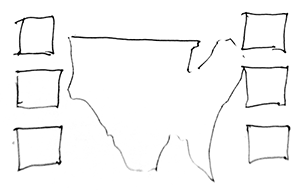 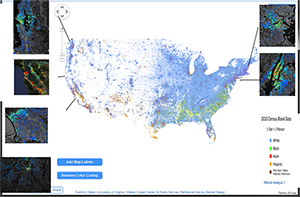Six cities spread out across the country. How do we show them in enough detail for comparisons and still provide context?
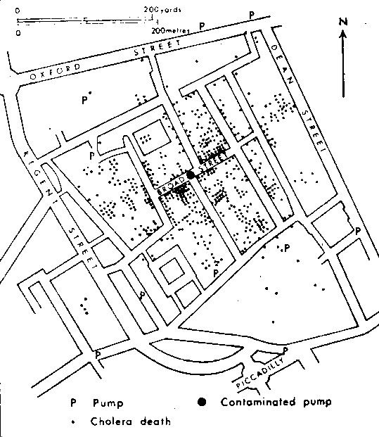
John Snow didn't use his map to discover, he used it to persuade.
In class we studied John Snow's famous 1854 map of cholera outbreaks in London. At the time, there were competing theories about the source of cholera. Some said it was air-borne, human-to-human contact, or elevation. Snow had been studying cholera for several years and made the connection to the intestinal tract, which suggested water-borne transmission.
Some companies in London were pumping contaminated water from the Thames. Snow was able to get the pump closed, and the epidemic subsided.
The case of the Broad Street water pump is a great example of a map that has a call to action. By plotting each death with the the same size box, people were able to draw their own conclusions.
Social Cartography
In the 1889 Charles Booth published his Poverty Map of London. He colored the income of each neighborhood street by street. Cartographers followed police men in their rounds and interviewed people. From pages and pages of notes, classifications were assigned in discrete steps. Similar colors with were assigned to similar incomes.
One Dot Equals One Person
Eric Fischer has colored the Census maps. He used the 2010 US census for his source, in which people self-identify their race. Non-Hispanic White, Non-Hispanic Black, Non-Hispanic Asian, Hispanic, Other. Fischer uses this as ordinal data, and assigns a color to each category. The outline of the census tract is used to distribute one dot for each person randomly within the boundary. This produces a slightly diffuse appearance, but it seems more realistic of the complexities of city life than harshly delineated choropleth maps.
The segregation is shocking.
Boston Apartment Prices
Jeff Kaufman has been a great resource. It because of Jeff that I am able to get my data. He published a technique for scraping Padmapper. I've been running this script once a month to get a picture of different cities across the United States.
Process Book
project: Off Campus Housing 2013-2014
student: John Morrison
professor: Hanspeter Pfister
CS171: Data Visualization
Harvard 2014